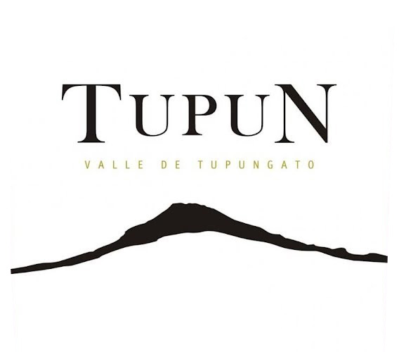

CRAVEIRO was founded on three cornerstones: quality of product, quality of people, and quality of relationships. It is therefore logical that our portfolio today continues to reflect the unerring principle of excellence. This principle continues to guide every step of our growth, from the choice of new representations, to the range of services demanded by an increasingly sophisticated and competitive market, to the informed personnel who provide them.
Our business strategy is focused on growing our global brands in the North American market through great knowledge of the European and North and South - American markets, creating new growth opportunities by supporting the right innovations and investments, and building a global, fact-based, high-performing culture, thereby enhancing the value of the brands we represent.
We invite you to explore CRAVEIRO's Web site for you to get to know our line of fine spirits and fine wines appreciated world wide. CRAVEIRO is the United States Importer of Isabela, Argentina; Bela, Chile and the Colorado importer for Bodega del Tupun, Argentina; Vina Sutil, Chile; Vina Polkura, Chile; Sur de los Andes, Argentina and Tenuta Casteani, Italy. CRAVEIRO also provides marketing services for Itaipava Pilsen, Brazil in Colorado.